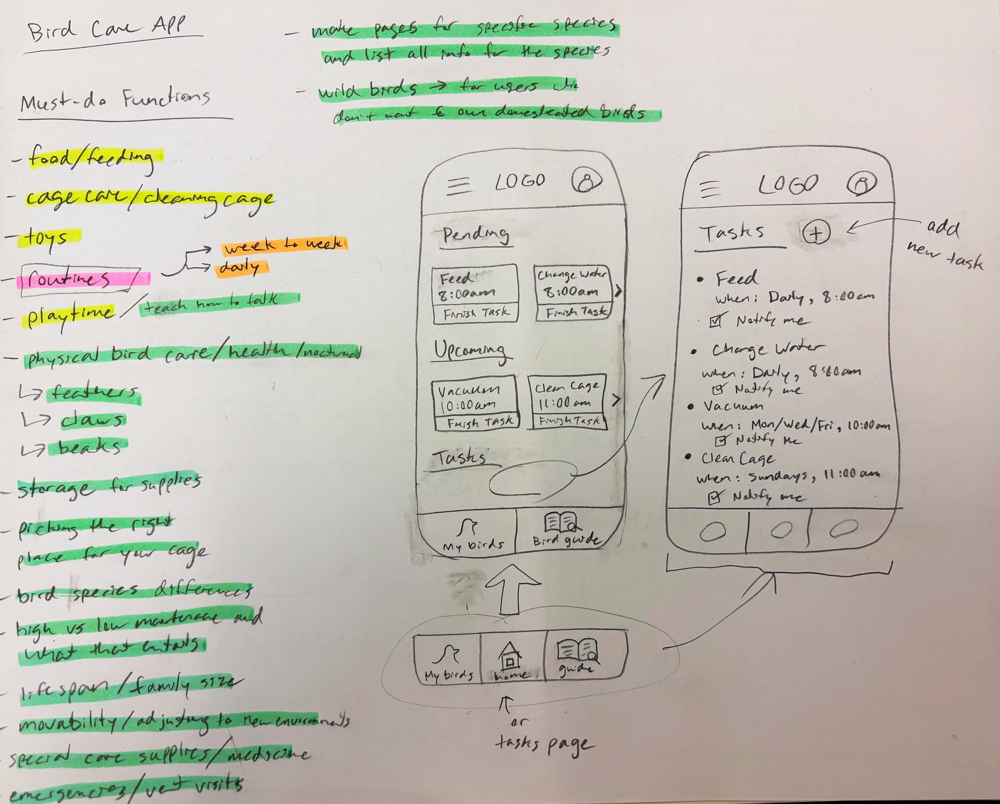

Project Overview
Chirp is a web application designed to educate and assist users in taking proper and consistent care of household pet birds.
THE PROBLEM
Owners of birds often have many different tasks to keep track of when caring for a bird, whether that be when to change their food and water or cleaning their cage on a schedule. Prospective bird owners may not know where to look for tips and educational material on how to own a pet bird.
THE GOAL
Generate a tool to help assist current bird owners with task scheduling and educate prospective bird owners on where to start.
ROLES
Mary Pyrdol - Sole UX/UI designer and researcher.
RESPONSIBILITIES
User research, wireframing, prototyping, user testing.
PROJECT DURATION
February 2024 - March 2024
Understanding the User
SUMMARY
For my bird care app, I conducted a competitive audit to see what has already been done to help users create consistent schedules or learn about birds. I wanted to do my research this way because I was mainly concerned about how other apps displayed task cards or areas where they can read more about bird species.
Interestingly, amongst all of the dog and cat care apps, there were almost no apps about bird care specifically. Since birds are higher maintenance than cats and dogs, I was surprised I could only find one bird-related app to analyze for this audit. Otherwise, I looked into existing cat and dog care apps for similar features.
Going into this research, I assumed formats for these apps would be very similar in layout, but I was surprised to find that not many apps include the ability to both schedule tasks and learn about different pet species. I got to see what I felt worked and what I felt didn’t in terms of existing scheduling elements and animal guides. This gave me insight for when I start to organize and combine these two crucial sections of my app.

Paper Wireframes
During the sketch process, I wanted to list all of the potential functions of the app with different essential bird maintenance tasks, and then organize them by category. I then started seeing how I could arrange the task cards on the homepage of the mobile version of the app, and I found some useful components and icons I definitely wanted to include in my lo-fi mockups.
I worked with a mobile-first approach since I felt that platform would be how users would access the application the most. Still, I planned to design a web version of the application for the sake of having more room for the bird guidance pages.
Digital Wireframes
When designing the web version and mobile version, I knew I wanted to make the navigation section into buttons instead of a hamburger menu. I felt this made the most sense for a couple of reasons. First, the homepage is the Task Board, so I felt the other two paths (Bird Guide and My Birds) in the app did not need their own collapsable menu overlay. Second, I felt it would make the user's experience easier since all of the app's possible functions are right in front of them.
On the "Task Board" page, I wanted to make sure the task cards were the first thing users see, but also making sure they weren't too large. In order to make different sections for the task cards, I made them horizontally scroll. This allowed me to create hierarchy in "Pending", "Upcoming" and "All Tasks" down the page.
Mockups
The translation of the pages were pretty straightforward from the lo-fi prototype. For the homepage, I was able to test out the horizontal scroll to allow for that vertical hierarchy prioritizing pending tasks. I also made minor adjustments like the arrangement of elements on web-sized pages.
One of my biggest concerns was finding icons that were visually descriptive enough for the places I wanted to use them in. For example, on the Bird Guide internal page under "Parakeet", I found some great icons like the broom for "cleaning and maintenance".
When moving onto the high fidelity mockups, I was concerned about using call-to-action buttons on the mobile homepage because I didn't want it to feel too cluttered. I did, however, want to get the user's attention and make it as easy as possible to see pending tasks and mark them as complete. I utilized the text size and good contrasting colors from my palette and landed on the current UI chips.
I also made sure to make the images of birds prominent on the Bird Guide to help users find specific species, and also add some color and variation to that page (since the other pages are mainly about displaying data or scheduling).
Iconography Size
I made sure to make iconography and buttons large enough for people to access them. Often times I've seen iconography too small to comprehend or touch, thus making it difficult for the user to interact with the mechanics of the app.
High Contrast
Contrast was a major one here. I wanted to be able to use Chirp's color palette as a nod to common parakeet colors, while also keeping in mind how well the light colors show up on darks and vise versa. This especially applied to the call-to-action buttons.
Hierarchical Headings
I utilized hierarchical headings in order for assistive devices like screen readers to navigate and translate the app's features and designs more accurately to the user.
Takeaways
IMPACT
“Chirp would SO help me carve out time in my day to consistently manage bird-related things. Birds should get the care they deserve!”
-a satisfied user
WHAT I LEARNED
From this project, I learned a lot about how to solidify branding across the product. I really think it often comes down to the color palette you're working with and how you plan out where to use the primary versus secondary colors. I also learned a lot about Figma's component creation capabilities. Especially on the screens where I allow users to create a new task card, I practiced components with dropdown sections like the AM/PM on the "time" section, or day/month/year in the "repeats" section.
Add to Calender
While working on the task cards, I thought of how it could be useful to allow users to add scheduled tasks to their personal calender or task reminder app on their phone or computer. That way, they can plan around other existing events in their day to day.
Schedule Share
After my competitive audit on dog care apps, I noticed there are many dog walking apps where you schedule someone to walk your dog for you. I figured it could be useful to have something similar to this, where the user could either share they schedule with a friend or find a bird-sitter within the app.
Veterenary Index
Lastly, I would love to add a section where users can input their favorite vet and urgent animal care locations into the app, including phone, email, and address information. This would be useful for when users need to share that information with potential bird-sitters or care takers.